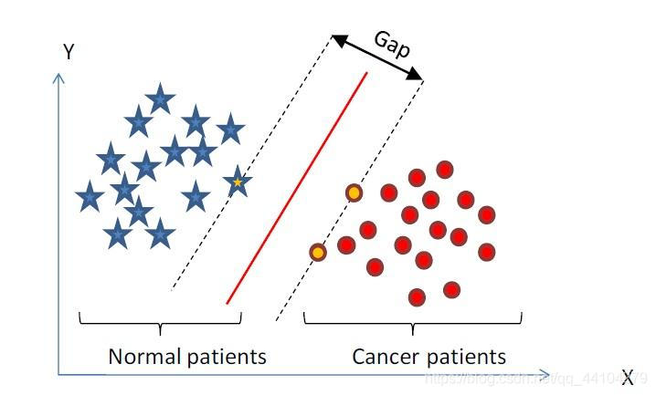

Support Vector Machine Classification
Contents

Support Vector Machine Classification¶
What will we do?¶
We will build a Support Vector Machine that will find the optimal hyperplane that maximizes the margin between two toy data classes using gradient descent.

What are some use cases for SVMs?¶
-Classification, regression (time series prediction, etc) , outlier detection, clustering
How does an SVM compare to other ML algorithms?¶

As a rule of thumb, SVMs are great for relatively small data sets with fewer outliers.
Other algorithms (Random forests, deep neural networks, etc.) require more data but almost always come up with very robust models.
The decision of which classifier to use depends on your dataset and the general complexity of the problem.
“Premature optimization is the root of all evil (or at least most of it) in programming.” - Donald Knuth, CS Professor (Turing award speech 1974)
What is a Support Vector Machine?¶
It’s a supervised machine learning algorithm which can be used for both classification or regression problems. But it’s usually used for classification. Given 2 or more labeled classes of data, it acts as a discriminative classifier, formally defined by an optimal hyperplane that seperates all the classes. New examples that are then mapped into that same space can then be categorized based on on which side of the gap they fall.
What are Support Vectors?¶

Support vectors are the data points nearest to the hyperplane, the points of a data set that, if removed, would alter the position of the dividing hyperplane. Because of this, they can be considered the critical elements of a data set, they are what help us build our SVM.
Whats a hyperplane?¶

Geometry tells us that a hyperplane is a subspace of one dimension less than its ambient space. For instance, a hyperplane of an n-dimensional space is a flat subset with dimension n − 1. By its nature, it separates the space into two half spaces.
Let’s define our loss function (what to minimize) and our objective function (what to optimize)¶
Loss function¶
We’ll use the Hinge loss. This is a loss function used for training classifiers. The hinge loss is used for “maximum-margin” classification, most notably for support vector machines (SVMs).

c is the loss function, x the sample, y is the true label, f(x) the predicted label.

Objective Function¶

As you can see, our objective of a SVM consists of two terms. The first term is a regularizer, the heart of the SVM, the second term the loss. The regularizer balances between margin maximization and loss. We want to find the decision surface that is maximally far away from any data points.
How do we minimize our loss/optimize for our objective (i.e learn)?
We have to derive our objective function to get the gradients! Gradient descent ftw. As we have two terms, we will derive them seperately using the sum rule in differentiation.

This means, if we have a misclassified sample, we update the weight vector w using the gradients of both terms, else if classified correctly,we just update w by the gradient of the regularizer.
Misclassification condition

Update rule for our weights (misclassified)

including the learning rate η and the regularizer λ The learning rate is the length of the steps the algorithm makes down the gradient on the error curve.
Learning rate too high? The algorithm might overshoot the optimal point.
Learning rate too low? Could take too long to converge. Or never converge.
The regularizer controls the trade off between the achieving a low training error and a low testing error that is the ability to generalize your classifier to unseen data. As a regulizing parameter we choose 1/epochs, so this parameter will decrease, as the number of epochs increases.
Regularizer too high? overfit (large testing error)
Regularizer too low? underfit (large training error)
Update rule for our weights (correctly classified)

import pandas as pd
from sklearn.model_selection import train_test_split
from sklearn.svm import SVC
from matplotlib import pyplot as plt
%matplotlib inline
warnings.filterwarnings("ignore")
import sklearn
D:\ProgramData\Anaconda3\lib\site-packages\pandas\compat\_optional.py:138: UserWarning: Pandas requires version '2.7.0' or newer of 'numexpr' (version '2.6.9' currently installed).
warnings.warn(msg, UserWarning)
---------------------------------------------------------------------------
NameError Traceback (most recent call last)
<ipython-input-1-88894aa4765c> in <module>
6 get_ipython().run_line_magic('matplotlib', 'inline')
7
----> 8 warnings.filterwarnings("ignore")
9 import sklearn
NameError: name 'warnings' is not defined
url = 'https://raw.githubusercontent.com/melwinlobo18/K-Nearest-Neighbors/master/Dataset/data.csv'
df = pd.read_csv(url) # Dataset - Breast Cancer Wisconsin Data
df['diagnosis'] = df['diagnosis'].map({
'M': 1,
'B': 2
}) # Label values - 1 for Malignant and 2 for Benign
labels = df['diagnosis'].tolist()
df['Class'] = labels #Cpying values of diagnosis to newly clreated labels column
df = df.drop(['id', 'Unnamed: 32', 'diagnosis'],
axis=1) #Dropping unncessary columns
df.head() #Displaying first five rows of the dataset
| radius_mean | texture_mean | perimeter_mean | area_mean | smoothness_mean | compactness_mean | concavity_mean | concave points_mean | symmetry_mean | fractal_dimension_mean | ... | texture_worst | perimeter_worst | area_worst | smoothness_worst | compactness_worst | concavity_worst | concave points_worst | symmetry_worst | fractal_dimension_worst | Class | |
|---|---|---|---|---|---|---|---|---|---|---|---|---|---|---|---|---|---|---|---|---|---|
| 0 | 17.99 | 10.38 | 122.80 | 1001.0 | 0.11840 | 0.27760 | 0.3001 | 0.14710 | 0.2419 | 0.07871 | ... | 17.33 | 184.60 | 2019.0 | 0.1622 | 0.6656 | 0.7119 | 0.2654 | 0.4601 | 0.11890 | 1 |
| 1 | 20.57 | 17.77 | 132.90 | 1326.0 | 0.08474 | 0.07864 | 0.0869 | 0.07017 | 0.1812 | 0.05667 | ... | 23.41 | 158.80 | 1956.0 | 0.1238 | 0.1866 | 0.2416 | 0.1860 | 0.2750 | 0.08902 | 1 |
| 2 | 19.69 | 21.25 | 130.00 | 1203.0 | 0.10960 | 0.15990 | 0.1974 | 0.12790 | 0.2069 | 0.05999 | ... | 25.53 | 152.50 | 1709.0 | 0.1444 | 0.4245 | 0.4504 | 0.2430 | 0.3613 | 0.08758 | 1 |
| 3 | 11.42 | 20.38 | 77.58 | 386.1 | 0.14250 | 0.28390 | 0.2414 | 0.10520 | 0.2597 | 0.09744 | ... | 26.50 | 98.87 | 567.7 | 0.2098 | 0.8663 | 0.6869 | 0.2575 | 0.6638 | 0.17300 | 1 |
| 4 | 20.29 | 14.34 | 135.10 | 1297.0 | 0.10030 | 0.13280 | 0.1980 | 0.10430 | 0.1809 | 0.05883 | ... | 16.67 | 152.20 | 1575.0 | 0.1374 | 0.2050 | 0.4000 | 0.1625 | 0.2364 | 0.07678 | 1 |
5 rows × 31 columns
target_names = ['', 'M', 'B']
df['attack_type'] = df.Class.apply(lambda x: target_names[x])
df.head()
| radius_mean | texture_mean | perimeter_mean | area_mean | smoothness_mean | compactness_mean | concavity_mean | concave points_mean | symmetry_mean | fractal_dimension_mean | ... | perimeter_worst | area_worst | smoothness_worst | compactness_worst | concavity_worst | concave points_worst | symmetry_worst | fractal_dimension_worst | Class | attack_type | |
|---|---|---|---|---|---|---|---|---|---|---|---|---|---|---|---|---|---|---|---|---|---|
| 0 | 17.99 | 10.38 | 122.80 | 1001.0 | 0.11840 | 0.27760 | 0.3001 | 0.14710 | 0.2419 | 0.07871 | ... | 184.60 | 2019.0 | 0.1622 | 0.6656 | 0.7119 | 0.2654 | 0.4601 | 0.11890 | 1 | M |
| 1 | 20.57 | 17.77 | 132.90 | 1326.0 | 0.08474 | 0.07864 | 0.0869 | 0.07017 | 0.1812 | 0.05667 | ... | 158.80 | 1956.0 | 0.1238 | 0.1866 | 0.2416 | 0.1860 | 0.2750 | 0.08902 | 1 | M |
| 2 | 19.69 | 21.25 | 130.00 | 1203.0 | 0.10960 | 0.15990 | 0.1974 | 0.12790 | 0.2069 | 0.05999 | ... | 152.50 | 1709.0 | 0.1444 | 0.4245 | 0.4504 | 0.2430 | 0.3613 | 0.08758 | 1 | M |
| 3 | 11.42 | 20.38 | 77.58 | 386.1 | 0.14250 | 0.28390 | 0.2414 | 0.10520 | 0.2597 | 0.09744 | ... | 98.87 | 567.7 | 0.2098 | 0.8663 | 0.6869 | 0.2575 | 0.6638 | 0.17300 | 1 | M |
| 4 | 20.29 | 14.34 | 135.10 | 1297.0 | 0.10030 | 0.13280 | 0.1980 | 0.10430 | 0.1809 | 0.05883 | ... | 152.20 | 1575.0 | 0.1374 | 0.2050 | 0.4000 | 0.1625 | 0.2364 | 0.07678 | 1 | M |
5 rows × 32 columns
df1 = df[df.Class == 1]
df2 = df[df.Class == 2]
plt.xlabel('radius_mean')
plt.ylabel('texture_mean')
plt.scatter(df1['radius_mean'], df1['texture_mean'], color='green', marker='+')
plt.scatter(df2['radius_mean'], df2['texture_mean'], color='blue', marker='.')
<matplotlib.collections.PathCollection at 0x7f802443fda0>
X = df.drop(['Class', 'attack_type'], axis='columns')
X.head()
| radius_mean | texture_mean | perimeter_mean | area_mean | smoothness_mean | compactness_mean | concavity_mean | concave points_mean | symmetry_mean | fractal_dimension_mean | ... | radius_worst | texture_worst | perimeter_worst | area_worst | smoothness_worst | compactness_worst | concavity_worst | concave points_worst | symmetry_worst | fractal_dimension_worst | |
|---|---|---|---|---|---|---|---|---|---|---|---|---|---|---|---|---|---|---|---|---|---|
| 0 | 17.99 | 10.38 | 122.80 | 1001.0 | 0.11840 | 0.27760 | 0.3001 | 0.14710 | 0.2419 | 0.07871 | ... | 25.38 | 17.33 | 184.60 | 2019.0 | 0.1622 | 0.6656 | 0.7119 | 0.2654 | 0.4601 | 0.11890 |
| 1 | 20.57 | 17.77 | 132.90 | 1326.0 | 0.08474 | 0.07864 | 0.0869 | 0.07017 | 0.1812 | 0.05667 | ... | 24.99 | 23.41 | 158.80 | 1956.0 | 0.1238 | 0.1866 | 0.2416 | 0.1860 | 0.2750 | 0.08902 |
| 2 | 19.69 | 21.25 | 130.00 | 1203.0 | 0.10960 | 0.15990 | 0.1974 | 0.12790 | 0.2069 | 0.05999 | ... | 23.57 | 25.53 | 152.50 | 1709.0 | 0.1444 | 0.4245 | 0.4504 | 0.2430 | 0.3613 | 0.08758 |
| 3 | 11.42 | 20.38 | 77.58 | 386.1 | 0.14250 | 0.28390 | 0.2414 | 0.10520 | 0.2597 | 0.09744 | ... | 14.91 | 26.50 | 98.87 | 567.7 | 0.2098 | 0.8663 | 0.6869 | 0.2575 | 0.6638 | 0.17300 |
| 4 | 20.29 | 14.34 | 135.10 | 1297.0 | 0.10030 | 0.13280 | 0.1980 | 0.10430 | 0.1809 | 0.05883 | ... | 22.54 | 16.67 | 152.20 | 1575.0 | 0.1374 | 0.2050 | 0.4000 | 0.1625 | 0.2364 | 0.07678 |
5 rows × 30 columns
y = df.Class
X_train, X_test, y_train, y_test = train_test_split(X, y, test_size=0.3)
print(len(X_train))
print(len(X_test))
398
171
model = SVC(kernel='linear')
model.fit(X_train, y_train)
SVC(C=1.0, cache_size=200, class_weight=None, coef0=0.0,
decision_function_shape='ovr', degree=3, gamma='auto_deprecated',
kernel='linear', max_iter=-1, probability=False, random_state=None,
shrinking=True, tol=0.001, verbose=False)
predictions = model.predict(X_test)
print(predictions)
[2 1 2 2 1 2 2 1 1 1 2 2 1 2 2 1 2 2 2 1 2 1 1 2 1 1 2 2 2 2 1 2 2 1 2 1 1
2 1 1 2 2 2 1 1 1 2 1 1 1 1 1 1 2 1 1 2 1 2 2 2 2 1 2 2 1 1 2 1 1 2 2 2 2
2 2 1 2 2 2 1 2 2 2 1 1 2 2 2 2 2 2 1 2 2 2 2 2 1 1 2 2 1 2 1 2 1 2 2 2 1
2 1 1 2 1 1 2 2 2 2 1 2 2 2 2 2 1 2 2 2 1 1 2 2 1 2 2 1 2 2 2 2 2 2 1 2 1
2 2 2 1 2 2 2 2 2 2 2 1 1 2 1 2 1 1 2 2 2 2 2]
percentage = model.score(X_test, y_test)
from sklearn.metrics import confusion_matrix
res = confusion_matrix(y_test, predictions)
print("Confusion Matrix")
print(res)
print(f"Test Set: {len(X_test)}")
print(f"Accuracy = {percentage*100} %")
---------------------------------------------------------------------------
NameError Traceback (most recent call last)
<ipython-input-3-09faf46fe024> in <module>
1 from sklearn.metrics import confusion_matrix
----> 2 res = confusion_matrix(y_test, predictions)
3 print("Confusion Matrix")
4 print(res)
5 print(f"Test Set: {len(X_test)}")
NameError: name 'y_test' is not defined
Support Vector Machine Tutorial Using Python Sklearn
import pandas as pd
from sklearn.datasets import load_iris
iris = load_iris()

iris.feature_names
['sepal length (cm)',
'sepal width (cm)',
'petal length (cm)',
'petal width (cm)']
iris.target_names
array(['setosa', 'versicolor', 'virginica'],
dtype='<U10')
df = pd.DataFrame(iris.data,columns=iris.feature_names)
df.head()
| sepal length (cm) | sepal width (cm) | petal length (cm) | petal width (cm) | |
|---|---|---|---|---|
| 0 | 5.1 | 3.5 | 1.4 | 0.2 |
| 1 | 4.9 | 3.0 | 1.4 | 0.2 |
| 2 | 4.7 | 3.2 | 1.3 | 0.2 |
| 3 | 4.6 | 3.1 | 1.5 | 0.2 |
| 4 | 5.0 | 3.6 | 1.4 | 0.2 |
df['target'] = iris.target
df.head()
| sepal length (cm) | sepal width (cm) | petal length (cm) | petal width (cm) | target | |
|---|---|---|---|---|---|
| 0 | 5.1 | 3.5 | 1.4 | 0.2 | 0 |
| 1 | 4.9 | 3.0 | 1.4 | 0.2 | 0 |
| 2 | 4.7 | 3.2 | 1.3 | 0.2 | 0 |
| 3 | 4.6 | 3.1 | 1.5 | 0.2 | 0 |
| 4 | 5.0 | 3.6 | 1.4 | 0.2 | 0 |
df[df.target==1].head()
| sepal length (cm) | sepal width (cm) | petal length (cm) | petal width (cm) | target | |
|---|---|---|---|---|---|
| 50 | 7.0 | 3.2 | 4.7 | 1.4 | 1 |
| 51 | 6.4 | 3.2 | 4.5 | 1.5 | 1 |
| 52 | 6.9 | 3.1 | 4.9 | 1.5 | 1 |
| 53 | 5.5 | 2.3 | 4.0 | 1.3 | 1 |
| 54 | 6.5 | 2.8 | 4.6 | 1.5 | 1 |
df[df.target==2].head()
| sepal length (cm) | sepal width (cm) | petal length (cm) | petal width (cm) | target | |
|---|---|---|---|---|---|
| 100 | 6.3 | 3.3 | 6.0 | 2.5 | 2 |
| 101 | 5.8 | 2.7 | 5.1 | 1.9 | 2 |
| 102 | 7.1 | 3.0 | 5.9 | 2.1 | 2 |
| 103 | 6.3 | 2.9 | 5.6 | 1.8 | 2 |
| 104 | 6.5 | 3.0 | 5.8 | 2.2 | 2 |
df['flower_name'] =df.target.apply(lambda x: iris.target_names[x])
df.head()
| sepal length (cm) | sepal width (cm) | petal length (cm) | petal width (cm) | target | flower_name | |
|---|---|---|---|---|---|---|
| 0 | 5.1 | 3.5 | 1.4 | 0.2 | 0 | setosa |
| 1 | 4.9 | 3.0 | 1.4 | 0.2 | 0 | setosa |
| 2 | 4.7 | 3.2 | 1.3 | 0.2 | 0 | setosa |
| 3 | 4.6 | 3.1 | 1.5 | 0.2 | 0 | setosa |
| 4 | 5.0 | 3.6 | 1.4 | 0.2 | 0 | setosa |
df[45:55]
| sepal length (cm) | sepal width (cm) | petal length (cm) | petal width (cm) | target | flower_name | |
|---|---|---|---|---|---|---|
| 45 | 4.8 | 3.0 | 1.4 | 0.3 | 0 | setosa |
| 46 | 5.1 | 3.8 | 1.6 | 0.2 | 0 | setosa |
| 47 | 4.6 | 3.2 | 1.4 | 0.2 | 0 | setosa |
| 48 | 5.3 | 3.7 | 1.5 | 0.2 | 0 | setosa |
| 49 | 5.0 | 3.3 | 1.4 | 0.2 | 0 | setosa |
| 50 | 7.0 | 3.2 | 4.7 | 1.4 | 1 | versicolor |
| 51 | 6.4 | 3.2 | 4.5 | 1.5 | 1 | versicolor |
| 52 | 6.9 | 3.1 | 4.9 | 1.5 | 1 | versicolor |
| 53 | 5.5 | 2.3 | 4.0 | 1.3 | 1 | versicolor |
| 54 | 6.5 | 2.8 | 4.6 | 1.5 | 1 | versicolor |
df0 = df[:50]
df1 = df[50:100]
df2 = df[100:]
import matplotlib.pyplot as plt
%matplotlib inline
Sepal length vs Sepal Width (Setosa vs Versicolor)
plt.xlabel('Sepal Length')
plt.ylabel('Sepal Width')
plt.scatter(df0['sepal length (cm)'], df0['sepal width (cm)'],color="green",marker='+')
plt.scatter(df1['sepal length (cm)'], df1['sepal width (cm)'],color="blue",marker='.')
<matplotlib.collections.PathCollection at 0x1f1b16976a0>
Petal length vs Pepal Width (Setosa vs Versicolor)
plt.xlabel('Petal Length')
plt.ylabel('Petal Width')
plt.scatter(df0['petal length (cm)'], df0['petal width (cm)'],color="green",marker='+')
plt.scatter(df1['petal length (cm)'], df1['petal width (cm)'],color="blue",marker='.')
<matplotlib.collections.PathCollection at 0x1f1b2018390>
Train Using Support Vector Machine (SVM)
from sklearn.model_selection import train_test_split
X = df.drop(['target','flower_name'], axis='columns')
y = df.target
X_train, X_test, y_train, y_test = train_test_split(X, y, test_size=0.2)
len(X_train)
120
len(X_test)
30
from sklearn.svm import SVC
model = SVC()
model.fit(X_train, y_train)
SVC(C=1.0, cache_size=200, class_weight=None, coef0=0.0,
decision_function_shape=None, degree=3, gamma='auto', kernel='rbf',
max_iter=-1, probability=False, random_state=None, shrinking=True,
tol=0.001, verbose=False)
model.score(X_test, y_test)
0.93333333333333335
model.predict([[4.8,3.0,1.5,0.3]])
array([0])
Tune parameters
1. Regularization (C)
model_C = SVC(C=1)
model_C.fit(X_train, y_train)
model_C.score(X_test, y_test)
0.93333333333333335
model_C = SVC(C=10)
model_C.fit(X_train, y_train)
model_C.score(X_test, y_test)
0.96666666666666667
2. Gamma
model_g = SVC(gamma=10)
model_g.fit(X_train, y_train)
model_g.score(X_test, y_test)
0.90000000000000002
3. Kernel
model_linear_kernal = SVC(kernel='linear')
model_linear_kernal.fit(X_train, y_train)
SVC(C=1.0, cache_size=200, class_weight=None, coef0=0.0,
decision_function_shape=None, degree=3, gamma='auto', kernel='linear',
max_iter=-1, probability=False, random_state=None, shrinking=True,
tol=0.001, verbose=False)
model_linear_kernal.score(X_test, y_test)
0.96666666666666667
Exercise
Train SVM classifier using sklearn digits dataset (i.e. from sklearn.datasets import load_digits) and then,
Measure accuracy of your model using different kernels such as rbf and linear.
Tune your model further using regularization and gamma parameters and try to come up with highest accurancy score
Use 80% of samples as training data size